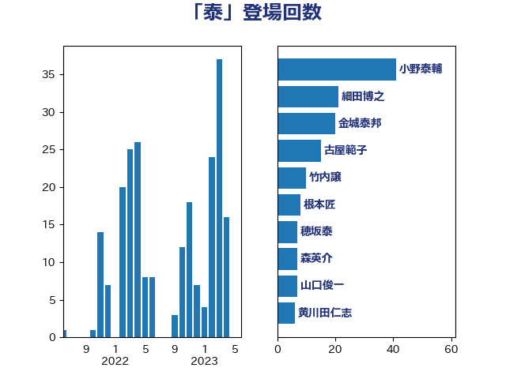

単語「泰」

| 小野泰輔 | 日本維新の会 | 41 回 |
| 細田博之 | 自由民主党 | 21 回 |
| 金城泰邦 | 公明党 | 20 回 |
| 古屋範子 | 公明党 | 15 回 |
| 竹内譲 | 公明党 | 10 回 |
| 根本匠 | 自由民主党 | 8 回 |
| 穂坂泰 | 自由民主党 | 7 回 |
| 森英介 | 自由民主党 | 7 回 |
| 山口俊一 | 自由民主党 | 7 回 |
| 黄川田仁志 | 自由民主党 | 6 回 |
| 鈴木淳司 | 自由民主党 | 5 回 |
| 平口洋 | 自由民主党 | 5 回 |
| 足立康史 | 日本維新の会 | 4 回 |
| 松木けんこう | 立憲民主党 | 3 回 |
| 城内実 | 自由民主党 | 3 回 |
| 阿部知子 | 立憲民主党 | 2 回 |
| 鈴木隼人 | 自由民主党 | 2 回 |
| 鈴木宗男 | 日本維新の会 | 2 回 |
| 遠藤良太 | 日本維新の会 | 2 回 |
| 西村康稔 | 自由民主党 | 2 回 |
| 牧島かれん | 自由民主党 | 2 回 |
| 牧原秀樹 | 自由民主党 | 2 回 |
| 海江田万里 | 立憲民主党 | 2 回 |
| 宮沢洋一 | 自由民主党 | 2 回 |
| 吉川沙織 | 立憲民主党 | 2 回 |
| 古賀篤 | 自由民主党 | 2 回 |
| 伊藤達也 | 自由民主党 | 2 回 |
| 今枝宗一郎 | 自由民主党 | 2 回 |
| 中山展宏 | 自由民主党 | 2 回 |
| 青山周平 | 自由民主党 | 1 回 |
| 関芳弘 | 自由民主党 | 1 回 |
| 長島昭久 | 自由民主党 | 1 回 |
| 鈴木俊一 | 自由民主党 | 1 回 |
| 金子恭之 | 自由民主党 | 1 回 |
| 谷公一 | 自由民主党 | 1 回 |
| 舩後靖彦 | れいわ新選組 | 1 回 |
| 緒方林太郎 | 無所属 | 1 回 |
| 空本誠喜 | 日本維新の会 | 1 回 |
| 漆間譲司 | 日本維新の会 | 1 回 |
| 浜田聡 | NHK党 | 1 回 |
| 浅川義治 | 日本維新の会 | 1 回 |
| 池畑浩太朗 | 日本維新の会 | 1 回 |
| 武井俊輔 | 自由民主党 | 1 回 |
| 櫻井周 | 立憲民主党 | 1 回 |
| 橋本岳 | 自由民主党 | 1 回 |
| 榛葉賀津也 | 国民民主党 | 1 回 |
| 森屋隆 | 立憲民主党 | 1 回 |
| 木原稔 | 自由民主党 | 1 回 |
| 早坂敦 | 日本維新の会 | 1 回 |
| 斉藤鉄夫 | 公明党 | 1 回 |
| 工藤彰三 | 自由民主党 | 1 回 |
| 宮内秀樹 | 自由民主党 | 1 回 |
| 古川禎久 | 自由民主党 | 1 回 |
| 加田裕之 | 自由民主党 | 1 回 |
| 亀岡偉民 | 自由民主党 | 1 回 |
| 中根一幸 | 自由民主党 | 1 回 |
| 上野賢一郎 | 自由民主党 | 1 回 |